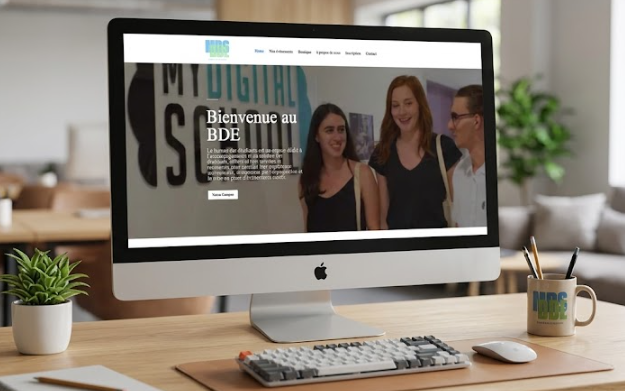
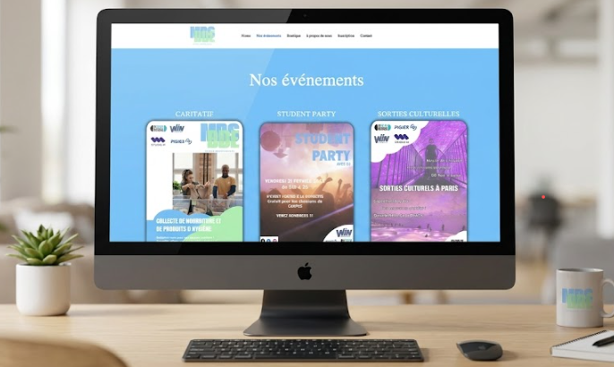

Le Contexte
Ce projet consistait à doter le Bureau Des Étudiants d'un site web moderne pour centraliser la vie du campus. J'ai travaillé main dans la main avec mes collègues qui ont fourni les contenus textuels et les visuels nécessaires.
La mission : Partir d'une page blanche pour livrer un site WordPress complet, structuré et prêt à l'emploi pour les futurs événements de l'école.

Mon Rôle
En charge de la création intégrale du site. J'ai réceptionné les informations transmises par mes collègues pour les structurer de manière cohérente :
- Installation et configuration de l'environnement WordPress.
- Hiérarchisation du contenu fourni par l'équipe (articles, calendrier, galerie).
- Mise en page des sections pour garantir une expérience utilisateur fluide.
- Optimisation du responsive pour les étudiants consultant le site sur mobile.
Méthodologie Collaborative
1. Brief
Réunions avec l'équipe pour comprendre l'arborescence souhaitée et collecter les visuels du BDE.
2. Intégration sous WordPress
Développement de la structure globale du site en veillant à respecter les attentes esthétiques et fonctionnelles transmises.
.png)
.png)
3. Revue d'équipe
Présentation du site aux collègues.
